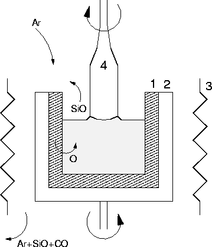
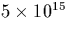

``From the moment I picked up your book until I laid it down, I was convulsed with laughter. Some day I intend reading it.''
Groucho Marx
The Silicon industry is a 1012 dollar industry worldwide, with Si technology lying at the core of the majority of computer systems in use today. Si is the focus of huge amounts of research, both industrially and academically. Despite this, there is still much that is not understood about the behaviour of impurities in Si, and a thorough understanding of the structure and properties of impurities is becoming increasingly important as devices become smaller and chip speeds are expected to increase.
Commercial Si is normally grown using either float zone methods or the
Czochralski![[*]](foot_motif.gif) growth technique
[1]. Czochralski growth forms the vast majority due
to the resultant wafers resistance to thermal stress, the speed of
production and low cost. A schematic diagram of a Czochralski-Si
grower is shown in Figure 1.1. The molten Si is
contained in a quartz crucible which is rotated. A single crystal Si
seed is placed on the surface and gradually drawn upwards and
simultaneously rotated; this draws the molten Si after it which
solidifies into a continuous crystal extending from the seed.
growth technique
[1]. Czochralski growth forms the vast majority due
to the resultant wafers resistance to thermal stress, the speed of
production and low cost. A schematic diagram of a Czochralski-Si
grower is shown in Figure 1.1. The molten Si is
contained in a quartz crucible which is rotated. A single crystal Si
seed is placed on the surface and gradually drawn upwards and
simultaneously rotated; this draws the molten Si after it which
solidifies into a continuous crystal extending from the seed.
|  |
Due to the high reactivity of molten Si there are only a few possible
choices for crucible, and SiO2 is the normal choice. However the
SiO2 gradually dissolves into the melt, releasing large quantities
of oxygen into the Si. Over 99% of this is lost as SiO gas from the
molten surface, but the rest dissolves into the single crystal Si.
Thus Cz-Si has an extremely high oxygen concentration (typically of
the order of 1018 atoms/cm3, or 1 ppm), and oxygen is always
the highest concentration impurity in Cz-Si. The solid
solubility of O in Si is  1018 atoms/cm3 at melting
point [3] but drops by several orders of magnitude at
room temperature [4], so there is a driving force for
precipitation. For extended anneals above
1018 atoms/cm3 at melting
point [3] but drops by several orders of magnitude at
room temperature [4], so there is a driving force for
precipitation. For extended anneals above  450
450 C, small
quartz precipitates form in the Si, accompanied by silicon
self-interstitials (Sii) and dislocation loops due to the volume
difference of Si and SiO2 (quartz has roughly half the Si density
of pure Si). This glut of dislocations causes a large degradation in
mechanical strength of the silicon (the yield point drops by a factor
of almost 5 [5]). Similarly, oxygen causes warpage of
the Si wafers during processing.
C, small
quartz precipitates form in the Si, accompanied by silicon
self-interstitials (Sii) and dislocation loops due to the volume
difference of Si and SiO2 (quartz has roughly half the Si density
of pure Si). This glut of dislocations causes a large degradation in
mechanical strength of the silicon (the yield point drops by a factor
of almost 5 [5]). Similarly, oxygen causes warpage of
the Si wafers during processing.
However, oxygen behaves differently when Cz-Si is annealed at lower
temperatures. Annealing at around 450 C for several hours
leads to a change in the electrical resistivity of the Si, and it is
now known that this is due to the formation of thermal double
donors, oxygen based defects with double donor levels close to the
conduction band. These can form with concentrations of
C for several hours
leads to a change in the electrical resistivity of the Si, and it is
now known that this is due to the formation of thermal double
donors, oxygen based defects with double donor levels close to the
conduction band. These can form with concentrations of
 1016cm-3, significantly degrading the performance of
the Si. Higher temperature annealing removes these (`donor kill'
processing), however there is interest in lowering the annealing
temperatures required during processing. High temperature anneals
allow greater defect migration and increased interfacial diffusion,
both of which become crucial in extremely small devices. As well as
thermal donors there are various other families of shallow donors that
form, including the shallow thermal donors, which form over an
extremely wide temperature range (some of these are stable up to
900
1016cm-3, significantly degrading the performance of
the Si. Higher temperature annealing removes these (`donor kill'
processing), however there is interest in lowering the annealing
temperatures required during processing. High temperature anneals
allow greater defect migration and increased interfacial diffusion,
both of which become crucial in extremely small devices. As well as
thermal donors there are various other families of shallow donors that
form, including the shallow thermal donors, which form over an
extremely wide temperature range (some of these are stable up to
900 C), as well as the `new donors' which form in the
500-600
C), as well as the `new donors' which form in the
500-600  C temperature range after the thermal donors anneal
out.
C temperature range after the thermal donors anneal
out.
The obvious way to avoid these defects would be to minimise the amount of oxygen in the material. There are various ways to achieve this. One particularly successful method is to place large magnetic coils around the molten Si bath (`MCZ', or Magnetic-field-applied-Czochralski). The resultant fields control the convection fluid flow, allowing the operator to minimise the mixing between the liquid in the centre of the bath with that at the edge. This effectively creates a liquid Si crucible around the central Si bath, which can trap much of the oxygen and slow its migration into the crystal[6]. This process drops the final thermal donor concentrations by over an order of magnitude, but cannot provide a final solution to the problem, since oxygen is needed within the crystal. As well as forming unwanted electrically active defects, oxygen performs a number of very useful roles. It can pin dislocations, which greatly strengthens the crystal. Float-zone Si, which contains over two orders of magnitude less oxygen than Cz-Si, is too soft for most commercial applications and crumbles very easily. Oxygen also acts as a gettering agent for trace metal impurities in the crystal (`intrinsic gettering'). Oxygen precipitates in the wafer core suppress stacking faults [7], and oxygen makes the Si more resistant to thermal stress during processing. This is the primary reason why Cz-Si is used for integrated circuit design, where there are many thermal processing steps.
Thus to some extent we are stuck with the problem of the oxygen
related donor defects in Si. Given this state of affairs, there are
two available courses. Firstly to develop alternative treatments that
minimise the donor defect concentration without dropping the oxygen
concentration (through alternative heat treatments, addition of other
impurities, and possibly even more exotic treatments such as
irradiation). Secondly it is known that the formation and
distribution of these defects is crucially dependent on the initial
condition of the Si.
Therefore with improved pre-treatments and processing we may be able
to tweak these to our favour, and in practise any solution will
probably be a combination of both of these.
In order to pursue this approach, it is obvious that detailed
knowledge is required of the behaviour of impurities in Si. Notably
the defect structures and formation processes, as well as the primary
impurity complexes and their diffusion mechanisms, need to be well
understood. Si is the most studied semiconductor material in the
world. Despite this, more than forty years of research into thermal
donors still leaves many fundamental
questions unanswered, including their structure, and their method of
formation. Some of the more important questions that need to be
addressed are as follows:
The last two are addressed in Chapters 6 and 9. The structure and mechanisms for the shallow thermal donors are addressed in Chapter 8. We present a model for the thermal donor core in Chapter 9. Although this does not provide a complete answer to the thermal donor problem, I have included some discussion of this and pointers towards an eventual solution, drawn from these results and the available experimental data.
As well as oxygen, there are many other light element impurities present in Si, either through accident or design. These will interact with oxygen in various ways, forming many different defect complexes. Nitrogen is not very soluble in Si, but can be incorporated in a variety of ways, either through annealing in an N2 atmosphere, ion implantation, or through addition of Si3N4 to the Si melt. Nitrogen helps to suppress `swirl defects' in the Si and stops wafer bowing during processing. It is also known to suppress thermal donor formation. Nitrogen is electrically inactive in Si, and is known to suppress vacancy and interstitial defects and increase gate oxide integrity [9]. Si3N4 is also used as a diffusion barrier. These effects are, in part at least, due to the interaction between nitrogen and oxygen.
Hydrogen is an extremely complex impurity in semiconductors. It is
now believed to be present in most Si samples. It is normally used in
semiconductor materials as a passivating element, saturating
electrically active dangling bonds associated with other defect
centres. However, its behaviour is more complex than that. In
Chapter 4 we show that in III-V materials a fully hydrogenated
vacancy behaves as a single shallow donor, and in InP this is
responsible for charge compensation of iron dopants. In addition, in
conjunction with other elements such as carbon we suggest in
Chapter 8 that hydrogen may also be responsible for some of
the shallow thermal donors observed in silicon. A full study of
oxygen-hydrogen interactions in silicon is beyond the scope of this
thesis.
Carbon is always present in concentrations of at least  cm-3, and can form a variety of complexes with oxygen in both its substitutional and interstitial forms. C-O complexes will be covered fully in the PhD of Paul Leary, but some discussion of their formation and behaviour is included here where relevant.
Finally, we examine the interaction between oxygen and vacancies.
Vacancies and self-interstitials can be introduced into Si in a
variety of ways. Irradiation produces many intrinsic defects, and
although most immediately recombine, it is still the easiest way to
produce large quantities of vacancies (V) and self-interstitials
(Sii). Proton irradiation hydrogenates the vacancies and prevents
recombination, leading to an excess of Sii. SiO2 precipitation
also creates Sii, and these aggregate into rod-like defects (RLDs)
that lie along  311
311 planes. Annealing Si in N2
gas leads to Si3N4 precipitation on the surface, which sends a
`wind' of vacancies into the bulk. Vacancies are known to complex
with oxygen and suppress thermal donor formation, and the role of
Sii in the formation of thermal donors is a hotly contested issue.
Complexes involving Sii and Oi are not believed to be stable at
normal annealing temperatures and break down at low temperatures
[12]. However vacancy-oxygen defects are common, and
precipitate instead of thermal donors. The vacancy-oxygen centre, or
`A centre' (OV-), is the most common impurity in electron
irradiated Cz-Si at room temperature. We therefore examine various
vacancy-oxygen defects, and show how vacancies act as precipitation
centres for oxygen.
planes. Annealing Si in N2
gas leads to Si3N4 precipitation on the surface, which sends a
`wind' of vacancies into the bulk. Vacancies are known to complex
with oxygen and suppress thermal donor formation, and the role of
Sii in the formation of thermal donors is a hotly contested issue.
Complexes involving Sii and Oi are not believed to be stable at
normal annealing temperatures and break down at low temperatures
[12]. However vacancy-oxygen defects are common, and
precipitate instead of thermal donors. The vacancy-oxygen centre, or
`A centre' (OV-), is the most common impurity in electron
irradiated Cz-Si at room temperature. We therefore examine various
vacancy-oxygen defects, and show how vacancies act as precipitation
centres for oxygen.
Our calculations are performed using AIMPRO, a density functional code
working under the local density approximation (LDA). The method is
ab initio, i.e. the only experimental input required is
the atomic number of the elements involved. The calculations use
large molecular clusters to simulate bulk crystal. These clusters
contain from 35 to 98 bulk atoms, and have their surface dangling
bonds terminated with hydrogen atoms (a typical 134 atom cluster is
shown in Figure 4.1a). The defect
structure is inserted into the centre of these clusters and some or
all of the atoms allowed to relax to their ground state. Thus we are
able to accurately describe the structure and symmetry of point
defects. The calculated Kohn-Sham eigenvalues also provide
semi-quantitative information about the localised electronic states of
the defects. Determination of the energy second derivatives for the
core defect atoms also allows us to calculate the local vibrational
modes of defects with different atomic isotopes, which can be directly
compared to experiment. By relaxing various alternative structures it
is possible to determine defect binding energies, and by applying
constraints to the relaxation to hold the cluster at a saddle point,
barriers to migration can be determined.
In Chapter 2 the theoretical background to AIMPRO is discussed. This includes Hartree Fock, Thomas Fermi Theory and Density Functional Theory, as well as some of the approximations used. Also included is a discussion of other theoretical methods commonly used to examine oxygen defects in Si, such as CNDO.
Chapter 3 describes the formalism used within AIMPRO. This includes discussion of the advantages and disadvantages of the method used, including the role of clusters, hydrogen termination and localised Gaussian basis sets.
Chapter 4 is concerned with hydrogenated defects in InP and GaAs. It is first shown that hydrogenated vacancies can form a range of electrically active defects, from VH4, which is a single shallow donor, to VH, which acts as a double acceptor. VH4 is shown to be responsible for the charge compensation of iron in InP. The role played by hydrogen in passivating group II acceptor impurities such as Be and Mg is also examined. The work is extended to passivated Group II acceptors in GaAs to examine trends with material type, and is closely tied to experimental research performed by Bernard Pajot in Paris.
The other results chapters are concerned with oxygen- related defects in silicon. Chapter 5 examines the range of vacancy-oxygen defects, VnOm, n=1,2, m=1,3. For the first time, coupled with experimental work from Århus, Denmark, we unambiguously show that VO2 is defect responsible for the 889 cm-1 local vibrational mode (LVM). A discussion of the annealing behaviour of VnOm defects is included, as well as the role of oxygen dimers.
Chapter 6 examines the interstitial oxygen dimer, O2i.
This defect is believed to be responsible for the low formation energy
of the thermal donors from 350-400 C, and it has been suggested
that it has a lower migration barrier than Oi. In collaboration
with experimental work done at Linköping by Lennart Lindström and
Tomas Hallberg, we show the oxygen dimer is responsible for the
1012 cm-1 LVM observed in Cz-Si. Our calculations show that the dimer is at least
metastable in a puckered assymetric form, and does indeed have a lower
migration barrier. The migration mechanism is discussed. We also
extend the argument to larger oxygen complexes such as the trimer, and
discuss the role of the dimer in the formation of other defect
complexes in Si.
C, and it has been suggested
that it has a lower migration barrier than Oi. In collaboration
with experimental work done at Linköping by Lennart Lindström and
Tomas Hallberg, we show the oxygen dimer is responsible for the
1012 cm-1 LVM observed in Cz-Si. Our calculations show that the dimer is at least
metastable in a puckered assymetric form, and does indeed have a lower
migration barrier. The migration mechanism is discussed. We also
extend the argument to larger oxygen complexes such as the trimer, and
discuss the role of the dimer in the formation of other defect
complexes in Si.
Nitrogen-Oxygen defects are examined in Chapter 7. We show that the primary N-O defect in silicon is the NNO defect, or N2iOi. This is electrically inactive and consists of Oi neighbouring an interstitial nitrogen pair. This work was done in collaboration with Frank Berg Rasmussen and Brian Bech Nielsen at Århus, Denmark. We also examine the NiOi defect and correlate it with a set of previously unassigned LVMs.
Chapter 8 deals with the shallow thermal donors and is to some extent the core of the thesis. We show that both NiO2i and (CH)iO4i can form shallow thermal donors, and probably lie at the core of two of the shallow thermal donor families in Si (responsible for some of the NL10 defects). A general mechanism (the `wonderbra mechanism') is described for turning defects with deep donor levels into shallow donor level defects, through electrostatic compression by Oi. This is shown to operate for the shallow thermal donors described here. The relevance of this mechanism for thermal donors, and possibilities for application to other materials is also discussed. This work arose from collaboration with Jo Miro and Peter Deák, theoretical researchers from Budapest. As an area of active ongoing research, we are currently involved in discussion with experimental researchers working on this problem in Japan, London, Amsterdam and Stüttgart.
Thermal donors (TDs) are examined in Chapter 9. We propose a core structure for the thermal donor based around two tri-valent oxygen atoms, and account for the various experimental data. We also discuss how the family of thermal donors can form, and possible structures for higher order TDs. A model is proposed for the NL10(Al) shallow thermal donor centre.
In Chapter 10, final conclusions are drawn and suggestions made for further work. Some general observations on the behaviour of oxygen-related species in Si are made, and the relevance of this work to the problem of thermal donors is discussed.